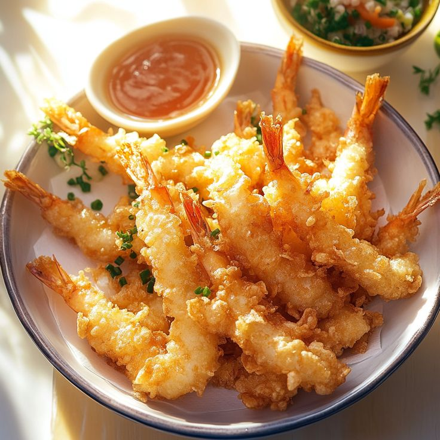
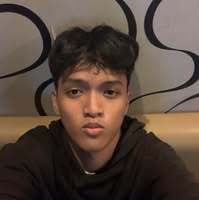
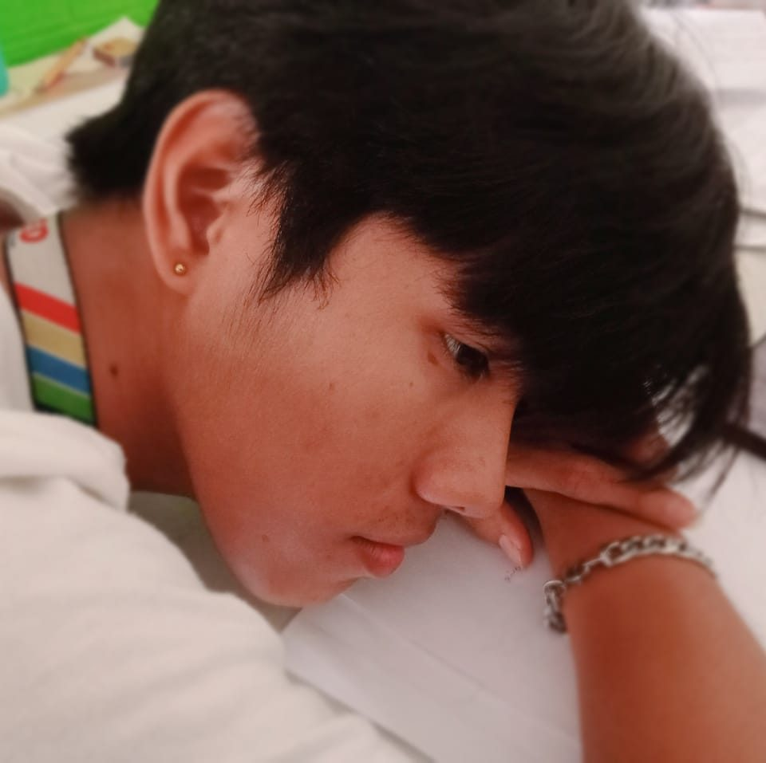
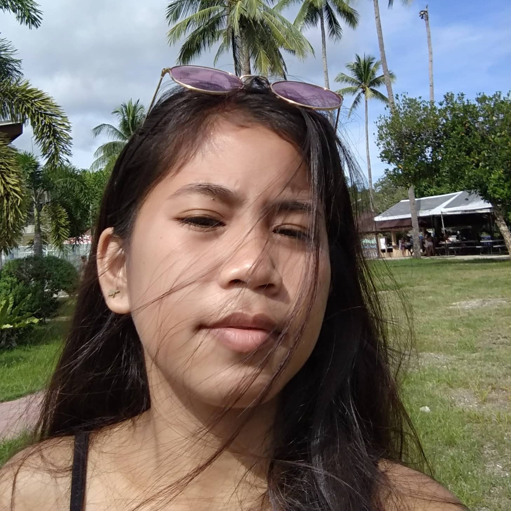
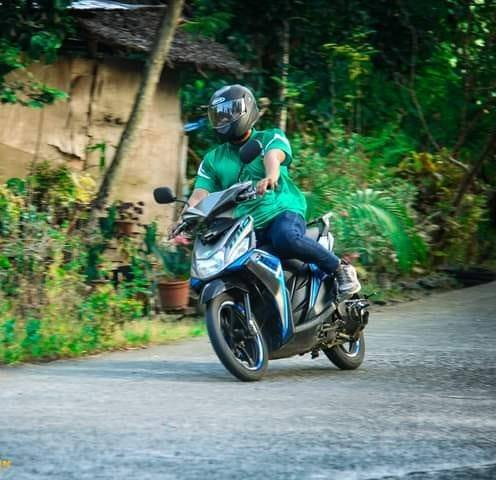
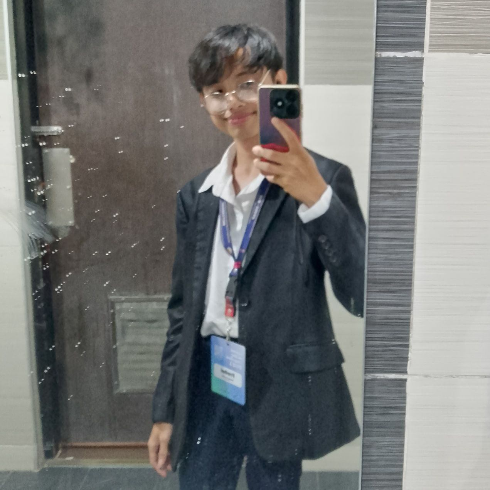
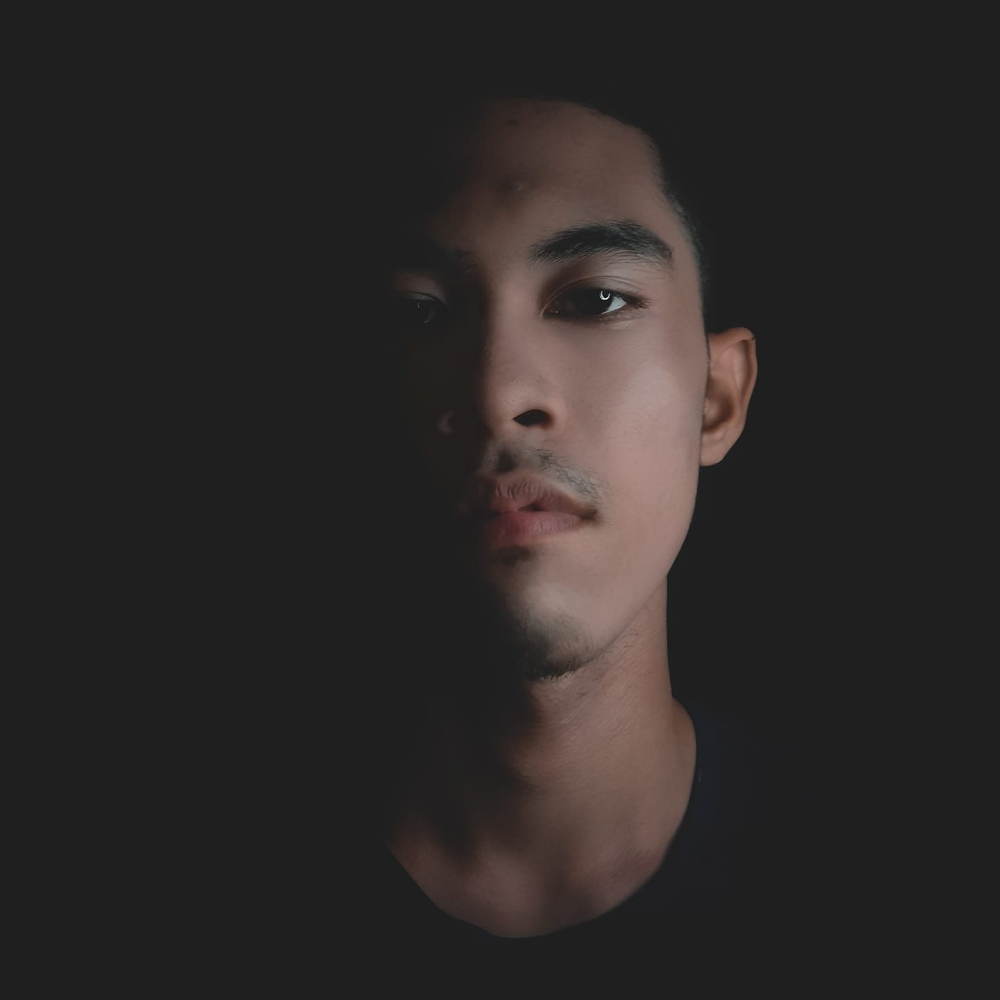

Home
Welcome to my personal website! Here you can learn more about me.
About Me

Biography
Hello! I’m Rexelle V. Azarraga, born on May 21, 2004, in Butuan City. Growing up, music, especially drumming, was my first love. I was always curious and adventurous as a kid, and as I grew older, I found guidance from friends who taught me valuable life lessons—driving, socializing, and balancing work with school. Now, at 20, I’m navigating adulthood, balancing my passions for music and programming, while continuing to grow and learn from each experience.
My Life Story
Childhood

When I was a kid, mornings felt magical. Sunlight streamed through the window, warming my face as I blinked away sleep. The world outside was calling—blue skies, endless space to run. I dashed barefoot across the pavement, the heat tickling my feet, laughter spilling out as I chased my friends. The afternoons smelled like home-cooked meals, the sound of my family filling the house. At night, I curled up under my blanket, the day’s adventures replaying in my head, drifting off with nothing but dreams and the quiet hum of crickets outside my window.
Teenage

As a teenager, I found myself drawn back to the rhythm I once loved. The distant sound of drums in a song would spark something familiar, a beat I couldn’t ignore. I started tapping on tables, my feet unconsciously keeping time, the feeling slowly returning like an old friend.
Then came Rondalla—warm afternoons spent plucking the bandurria, my fingers learning the dance of strings. The melodies felt different yet familiar, a new way to express what words couldn’t. In those moments, whether drumming on anything I could find or playing alongside the group, I felt connected—like I was rediscovering a part of myself I never truly lost.
Adulthood

Adulthood came fast, and with it, a new world filled with lessons I never expected. I met friends who became like brothers and sisters, guiding me through the things that weren’t in textbooks. They taught me how to drink—not just for the taste but for the stories shared over clinking glasses. They showed me the thrill of the road, the freedom of driving under the city lights. Work became more than just responsibility; it was an experience, a test of patience and growth. College wasn’t just about studying—it was late nights, deep talks, and the realization that life was bigger than I had imagined. Through them, I learned, I stumbled, I laughed, and somehow, I found myself along the way.
Looking back, every stage of my life shaped me in ways I never expected. From the carefree days of childhood to rediscovering my passion for music, and finally stepping into adulthood, each moment left its mark. The lessons, the laughter, the struggles—they all became pieces of who I am today. And though the journey is far from over, I carry those memories with me, knowing that every step forward is just another chapter waiting to be written.
Hobbies
In my free time, I enjoy joyriding, playing the drums, and gaming. These activities help me relax and express my creativity.
Joyriding with Friends
There’s nothing like the thrill of hitting the road with my friends, cruising through scenic routes, and feeling the wind rush past. Whether it’s a spontaneous ride or a planned trip, joyriding is my way of unwinding, enjoying good company, and experiencing the freedom of the open road.
Playing the Drums
Drumming has always been my passion—it’s my way of expressing energy and rhythm. Whether I’m practicing alone or jamming with others, the beat keeps me grounded and energized. There’s something satisfying about creating music through raw power and precision, making every session an adrenaline rush.
Playing Games
Gaming has been a big part of my life, from childhood to now. I love diving into immersive worlds, experiencing epic stories, and mastering challenging gameplay. Whether it’s exploring vast open worlds or engaging in intense battles, gaming is my escape and a way to unwind after a long day.
Favorites
Some of my favorite things include my favorite food fried tempura, favorite artist 21 Pilots, and favorite color Emerald Green. They bring joy to my life!
Fried Tempura
21 Pilots

Emerald Green

Friends
I am grateful for my friends who support me through thick and thin. Each one of them has a special place in my heart.
Aijalon Sindo
John Paul Sevilla
Bea Boniel
Ace Abad
Franz Marc Gelicame
Jhoram Morales
